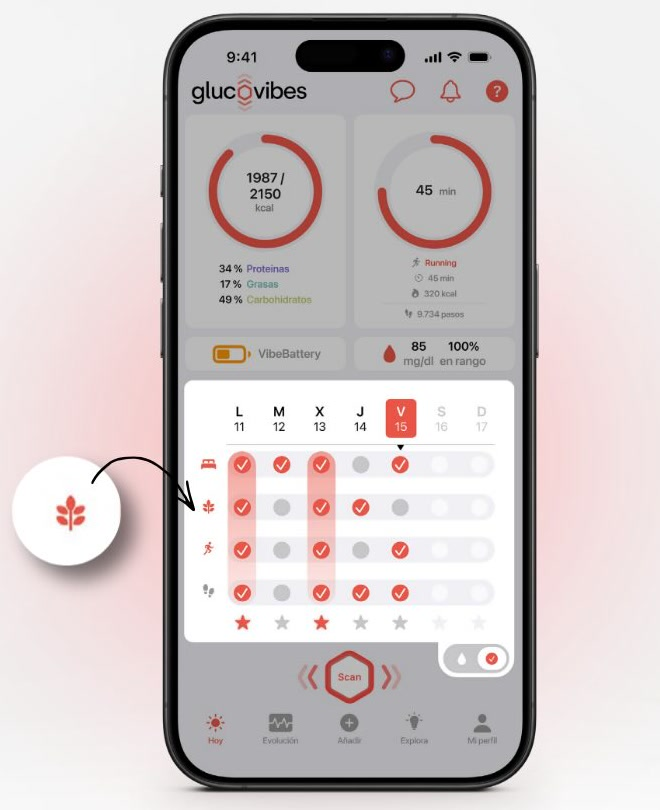

Aprende tu metabolismo
25 g de fibra al día. ¿Cómo se llega?
Cuatro cambios sencillos para conseguirlo.
Desliza →
Hacemos visible lo invisible
Cuatro cambios sencillos para conseguirlo.
Desliza →

Al llegar a 25 g de fibra, la app Glucovibes marca tu check del día.
Pequeños cambios cada día suman más que una dieta perfecta un solo día.
Desliza →
glucovibes.com